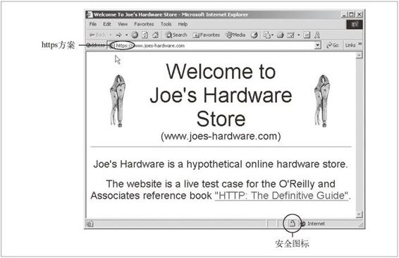
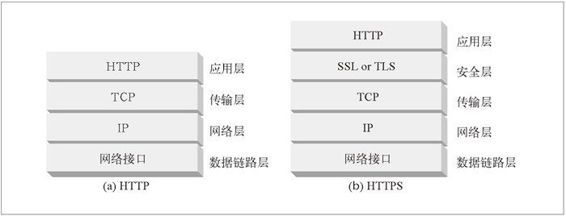

14.1 保护 HTTP 的安全
人们会用 Web 事务来处理一些很重要的事情。如果没有强有力的安全保证，人们就无法安心地进行网络购物或使用银行业务。如果无法严格限制访问权限，公司就不能将重要的文档放在 Web 服务器上。Web 需要一种安全的 HTTP 形式。
前面的章节讨论了一些提供认证（基本认证和摘要认证）和报文完整性检查（摘要 qop="auth-int"）的轻量级方法。对很多网络事务来说，这些方法都是很好用的，但对大规模的购物、银行事务，或者对访问机密数据来说，并不足够强大。这些更为重要的事务需要将 HTTP 和数字加密技术结合起来使用，才能确保安全。
HTTP 的安全版本要高效、可移植且易于管理，不但能够适应不断变化的情况而且还应该能满足社会和政府的各项要求。我们需要一种能够提供下列功能的 HTTP 安全技术。
服务器认证（客户端知道它们是在与真正的而不是伪造的服务器通话）。
客户端认证（服务器知道它们是在与真正的而不是伪造的客户端通话）。
完整性（客户端和服务器的数据不会被修改）。
加密（客户端和服务器的对话是私密的，无需担心被窃听）。
效率（一个运行的足够快的算法，以便低端的客户端和服务器使用）。
普适性（基本上所有的客户端和服务器都支持这些协议）。
管理的可扩展性（在任何地方的任何人都可以立即进行安全通信）。
适应性（能够支持当前最知名的安全方法）。
在社会上的可行性（满足社会的政治文化需要）。
HTTPS
HTTPS 是最流行的 HTTP 安全形式。它是由网景公司首创的，所有主要的浏览器和服务器都支持此协议。
HTTPS 方案的 URL 以 https://，而不是 http:// 开头，据此就可以分辨某个 Web 页面是通过 HTTPS 而不是 HTTP 访问的（有些浏览器还会显示一些标志性的安全提示，如图 14-1 所示）。

图 14-1 浏览安全 Web 站点
使用 HTTPS 时，所有的 HTTP 请求和响应数据在发送到网络之前，都要进行加密。HTTPS 在 HTTP 下面提供了一个传输级的密码安全层（参见图 14-2）——可以使用 SSL，也可以使用其后继者——传输层安全（Transport Layer Security，TLS）。由于 SSL 和 TLS 非常类似，所以在本书中我们不太严格地用术语 SSL 来表示 SSL 和 TLS。

图 14-2 HTTPS 是位于安全层之上的 HTTP，这个安全层位于 TCP 之上
大部分困难的编码及解码工作都是在 SSL 库中完成的，所以 Web 客户端和服务器在使用安全 HTTP 时无需过多地修改其协议处理逻辑。在大多数情况下，只需要用 SSL 的输入 / 输出调用取代 TCP 的调用，再增加其他几个调用来配置和管理安全信息就行了。